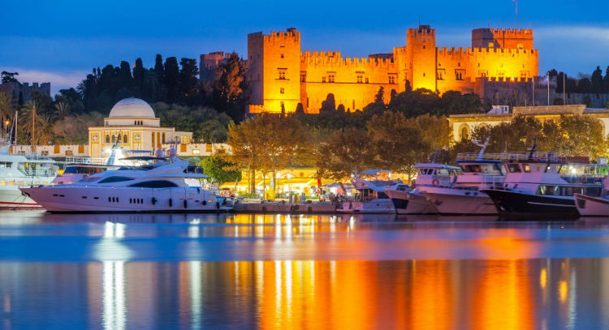

Ρόδος! Το 4ο μεγαλύτερο νησί της Ελλάδας, στο οποίο μπορείς μέσα σε μία ώρα να δεις και παραλία αλλά και βουναλάκια. Χρυσή άμμος, μπλε νερά και μπαράκια αποτελούν τις παραλίες της. Η βραδινή ζωή της σηκώνει και κλίμα οικογενειακό αλλά και για ζευγάρια. Από τη μια υπάρχουν πάρα πολλά μπαρ που μπορούν να φιλοξενήσουν παρέες ενηλίκων τα μεσάνυχτα. Από την άλλη οι δρόμοι πλημμυρίζουν από εστιατόρια και πάρκα, όπου οικογένειες μπορούν να επισκεφτούν. Τα ξενοδοχεία είναι ευρύχωρα και με πολύ ζεστό κλίμα.
